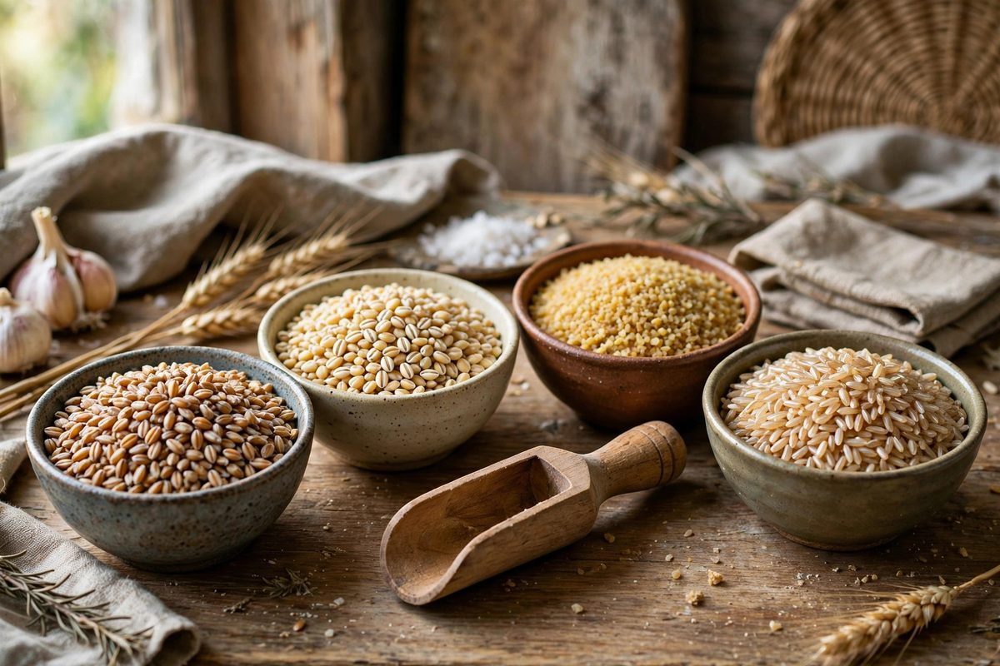

Home » Guides
Whole Grains

Whole grains are a daily staple of the Mediterranean diet. Barley, farro, bulgur, oats, brown rice, and wholewheat bread and pasta provide slow-release energy, fibre, and minerals, and they form the base of countless traditional meals. This guide explains the main grains, how to cook them, and how to build meals around them.
Why whole grains matter
Whole grains keep the bran, germ, and endosperm of the grain, so they retain fibre, B vitamins, magnesium, and iron that refined grains lose. The fibre slows digestion, keeps blood sugar steadier, and feeds the beneficial bacteria in the gut. Studies link regular wholegrain intake with a lower risk of heart disease, type 2 diabetes, and bowel cancer. In the Mediterranean pattern, grains are eaten at most meals, but in modest portions alongside vegetables, legumes, and fish, rather than as the main event.
The main Mediterranean grains
Barley is chewy and nutty, and it is excellent in soups and salads. Farro, an ancient wheat, has a firm bite and works beautifully in grain bowls and risotto-style dishes. Bulgur wheat cooks in minutes with boiling water and is the base of tabbouleh. Oats make a simple breakfast porridge, and brown rice is a reliable everyday grain. Wholewheat pasta and bread are the familiar staples, and couscous, though technically pasta, cooks in five minutes and pairs with vegetables and chickpeas. Keep two or three of these in the cupboard and rotate them through the week.
Cooking grains well
Most grains cook like rice: rinse, add water or stock, simmer until tender, then rest. Barley needs about forty-five minutes, farro about thirty, brown rice about forty, and bulgur about fifteen. Cook a large pot at the weekend and keep it in the fridge for three to four days, so weekday meals come together quickly. Season the cooking water with salt and a bay leaf, and toss cooked grains with olive oil and lemon while they are still warm so they absorb the flavour. Leftover grains make excellent salads the next day.
Building meals around grains
A good Mediterranean plate pairs a grain with vegetables and a protein. Barley soup with white beans and greens is a complete meal. Farro salad with roasted vegetables, feta, and herbs works for lunch or dinner. Bulgur tabbouleh with chickpeas and a yoghurt dressing is light and fresh. Wholewheat pasta with tomato, garlic, and beans is a classic weeknight dinner. Keep the grain portion to about a quarter of the plate, fill half the plate with vegetables, and add a palm-sized portion of protein.
Cooking grains in bulk
Cooking grains in bulk saves time all week. On Sunday, cook a large pot of rice, quinoa, or barley, and store it in the fridge in portions. Cooked grains keep for four to five days, and they can be used in salads, bowls, soups, and stir-fries. To reheat them, sprinkle with a little water and warm them in a pan or microwave. Freeze extra portions in bags, flatten them so they stack neatly, and defrost them overnight in the fridge. A freezer full of cooked grains means a meal is always ten minutes away, and it is one of the simplest habits that makes the Mediterranean diet practical for busy people.
Frequently Asked Questions
How much whole grain should I eat each day?
Most guidelines suggest three or more servings a day, with a serving roughly the size of a slice of bread or half a cup of cooked grains. A quarter of the plate at each meal is a good rule.
Is pasta part of the Mediterranean diet?
Yes, in moderation. Traditional portions are small, around 80 grams dry, and pasta is served with vegetables, beans, or fish rather than heavy cream sauces.
Are oats a Mediterranean food?
Oats are not traditional in the Mediterranean, but they fit the pattern well as a whole grain and make a good breakfast, so they are commonly included in modern Mediterranean-style eating.